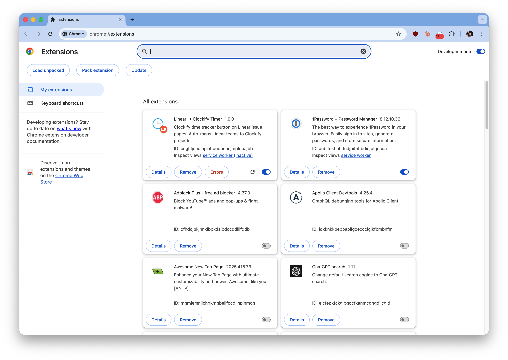
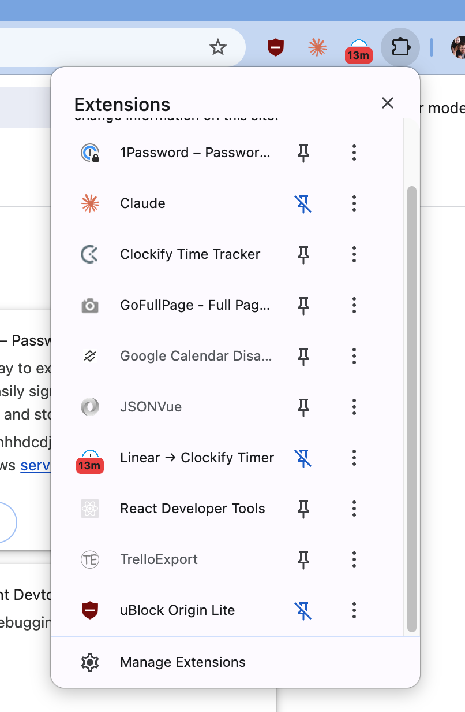

Linear → Clockify Timer
Chrome extension — Clockify time-tracker Linear és HelpScout integrációval. Egyszeri ~5 perc telepítés.
Miért kell zipből telepíteni? Az extension még nincs fent a Chrome Web Store-on (review alatt), addig kézzel kell telepíteni. Ha egyszer kész, áttérünk a Web Store-ra és erre nem kell majd emlékezned.
1. Zip kicsomagolása
Csomagold ki a letöltött linear-clockify.zip fájlt egy olyan mappába, ahol hosszú távon is lesz — például:
- macOS:
~/Applications/linear-clockify/vagy~/Documents/chrome-extensions/linear-clockify/ - Windows:
C:\ChromeExtensions\linear-clockify\
⚠️ Fontos: a kicsomagolás után ne mozgasd és ne töröld ezt a mappát! A Chrome minden indításkor innen olvassa be az extensiont. Ha elmozdítod, az extension eltűnik és újra kell tölteni.
A kicsomagolás után a mappában ilyen fájloknak kell lenniük:
linear-clockify/
├── manifest.json
├── background.js
├── content.js
├── hs-content.js
├── popup.html
├── options.html
├── icons/
└── ...2. Developer mode + Load unpacked
- Nyisd meg a Chrome-ban:
chrome://extensions/ - A jobb felső sarokban kapcsold be a Developer mode (Fejlesztői mód) kapcsolót
- Bal felül megjelenik 3 gomb — kattints a Load unpacked (Kicsomagolt bővítmény betöltése) gombra

- A megnyíló mappaválasztóban válaszd ki azt a mappát, amelyikben közvetlenül ott van a
manifest.json(pl.linear-clockify/) - Az extensionnek meg kell jelennie a listában Linear → Clockify Timer néven
3. Extension kitűzése (pin)
Hogy mindig lásd az ikont, tűzd ki a toolbarra:
- Kattints a 🧩 puzzle ikonra a Chrome jobb felső sarkában
- A listában keresd meg a Linear → Clockify Timer sort
- Kattints mellette a pin ikonra (áthúzott pin → normál pin)

Ezután az extension ikonja megjelenik a címsor jobb oldalán, onnan egy kattintással elérhető.
4. API kulcsok beszerzése
Az extension két API kulcsot kér a beállításokban.
Clockify API key
- Menj ide: https://app.clockify.me/manage-api-keys
- Ha még nincs aktív kulcsod: kattints a Generate gombra
- Másold ki a kulcsot (egyszer látszik, érdemes jelszókezelőbe menteni)
Linear API key
- Menj ide: https://linear.app/gghq/settings/account/security
- Görgess a Personal API keys szekcióhoz
- New API key → adj neki egy nevet (pl.
linear-clockify-extension) - Másold ki a kulcsot (ez is csak egyszer látszik!)
5. API kulcsok megadása az extensionben
- Kattints jobb gombbal az extension ikonjára → Options
(vagy:chrome://extensions/→ Linear → Clockify Timer kártya → Details → Extension options) - Illeszd be a Clockify API key és Linear API key mezőkbe a kulcsokat
- Mentés
6. Használat
- Nyiss egy Linear issue-t vagy HelpScout conversationt
- Kattints az extension ikonjára a toolbaron
- A popup tetején megjelenik a ▶ Start gomb → kattints rá → elindul a Clockify timer a megfelelő projekttel és leírással
- Stop ugyanúgy a popupból
Frissítés új verzióra
Ha szólnak hogy jött új verzió:
- Töltsd le a zipet újra (fenti ⬇ gomb — mindig a legfrissebb)
- Csomagold ki ugyanabba a mappába, felülírva a régi fájlokat
(vagy: töröld a régi mappa tartalmát és csomagold oda az újat) - Nyisd meg:
chrome://extensions/→ Linear → Clockify Timer kártyán a 🔄 Reload gomb - Az új verzió azonnal aktív
Gyakori hibák
- „This extension may have been corrupted" vagy „Load unpacked failed"
- Valószínűleg nem a megfelelő mappát választottad ki. Azt a mappát kell kiválasztani, amelyikben közvetlenül ott van a
manifest.json. - „Developer mode extensions" figyelmeztetés Chrome indításkor
- Ez normál, mert nem a Chrome Web Store-ból telepítettük. Nyugodtan nyomd meg a Keep / Maradjon gombot.
- Eltűnt az extension Chrome újraindítás után
- A kicsomagolt mappát valaki/valami elmozdította vagy törölte. Csomagold ki újra egy stabil helyre és töltsd be újra (Load unpacked).
- „Invalid API key" hiba
- Ellenőrizd az Options oldalon, hogy a helyes kulcsot másoltad-e be, szóközök nélkül. Ha kétséges, generálj újat.
- Nem jelenik meg az extension ikonja a toolbaron
- Kattints a 🧩 puzzle ikonra (3. lépés), és tűzd ki onnan.